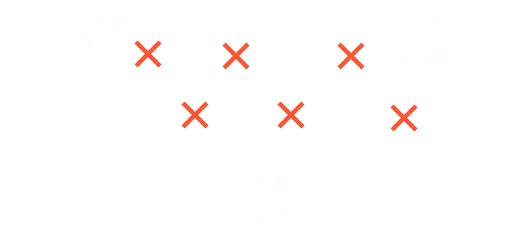
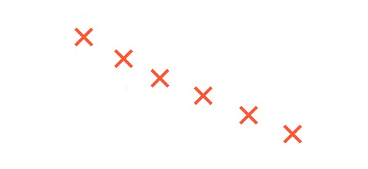
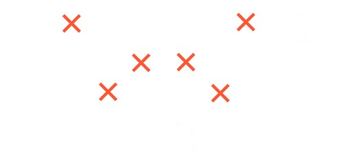
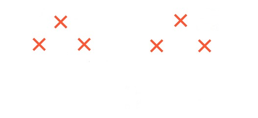

Petit groupe que l'on a créé pour que j'apprenne mes chorés aux filles.
| Nom | Prénom |
|---|---|
| Vershoren | Alizée |
| Dumont | Léa |
| Deleu | Valentine |
| Foerster | Lorane |
| Leisen | Laura |
| Zagorski | Vicky |
Toute la choré est dans un thème très girly, la première est en mode "sensuel", la deuxième et la troisième sont un peu plus hip hop/commercial
Comme tu me l'avais dis, cette choré est dans le thème de l'amour. Moi je la vois vraiment en mode "femmes fatales". En mode très girly et tout.
Il y a énormément de déplacements et d'effets de groupe dans la choré. Voici les différents placements avec le timing de la musique (laisse le curseur sur l'image pour voir le timing) :
   Base foncée, classe et neutre. Col roulé, top, chemise, veste, pantalon 3/4, ... Bleu ou gris foncé. Avec un élément rouge. Le haut et le bas doivent être raccord. Une personne de la choré devra porter un sweat rouge.